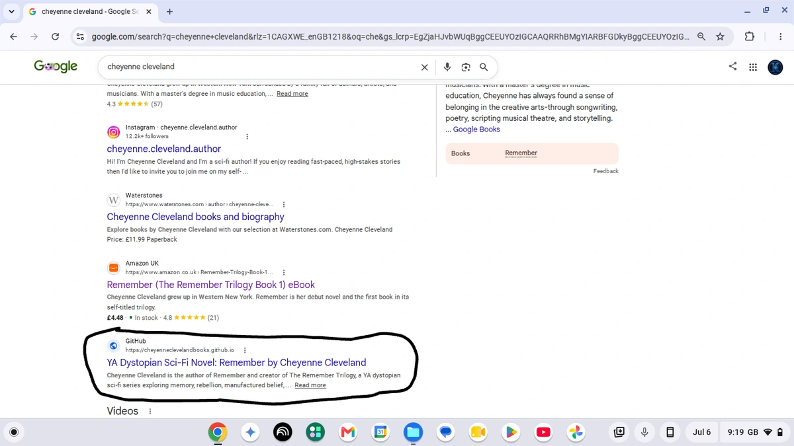
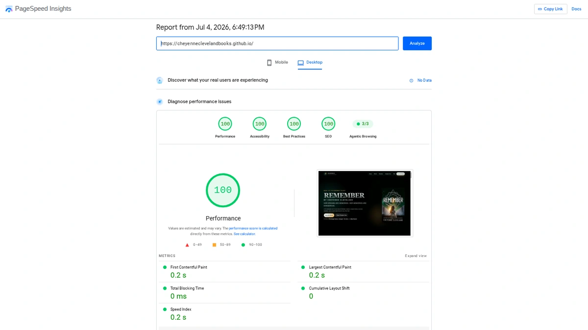

Google search visibility
The supplied Google Search screenshot shows the Cheyenne Cleveland GitHub author website appearing for a branded search for her name.
A real personalised book preview website built by KRONATRIX for Cheyenne Cleveland. This case study documents what is publicly visible in the finished reader experience and why those choices matter.

The finished cover view places the book cover next to a free chapter-one preview, purchase action, reader-list link and official author-profile links.
Open the live client website →Cheyenne Cleveland has both a live KRONATRIX book-preview website and a separate live author website, connected to her official author identity and public social presence.
The title, author and visual identity are established immediately instead of being buried inside a general profile.
The interface gives the visitor an obvious next step: begin the preview and then move toward the author's chosen conversion action.
The live URL gives prospective clients and search systems a verifiable example of KRONATRIX's actual author work.
These screenshots document observed results at the dates shown. They are evidence of what was observed then, not a promise that rankings or scores remain unchanged.

The supplied Google Search screenshot shows the Cheyenne Cleveland GitHub author website appearing for a branded search for her name.

The supplied PageSpeed Insights desktop report dated 4 July 2026 shows 100 scores for Performance, Accessibility, Best Practices and SEO at the time of that test.
The £500 one-time Personalised Book Preview Website is built around one individual book, with less than 10% available to preview and reader actions such as purchase, follow or email-list signup.
Choose the service you want and enter only your email address. We contact you directly to confirm whether the project is a suitable fit.